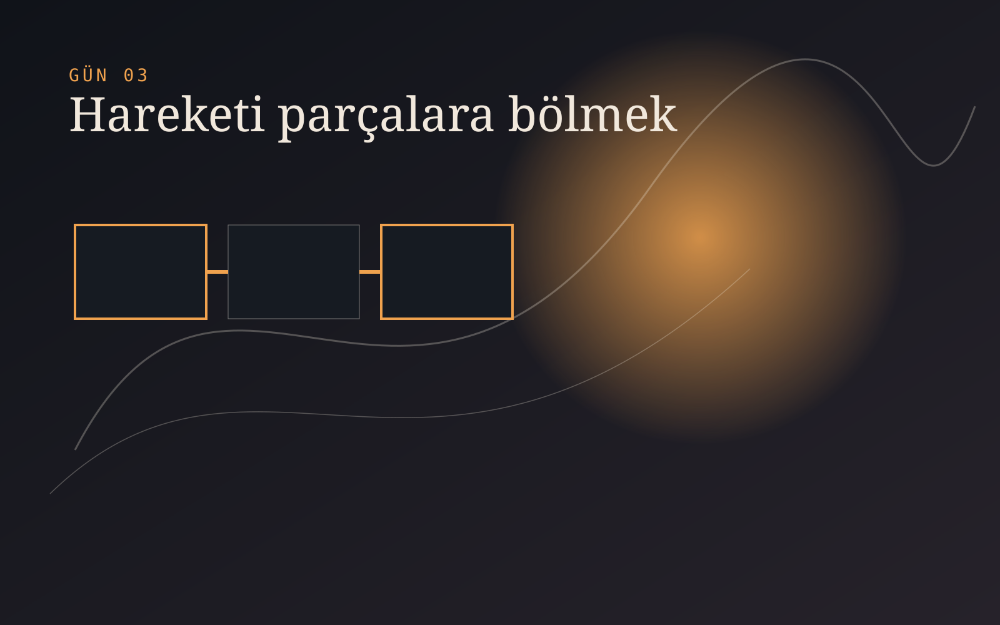

CANLI ATÖLYE · Atölyede sürüyor
Görselden Harekete
Teknik katmanlardan çıkan bir görüntüyü hareket ettirirken kimliğini ne kadar koruyabilirim?
Blender ve InvokeAI katmanlarından başlayıp Flow ve Meta AI ile harekete uzanan canlı atölye. Sonuçtan çok, kararların ve süreklilik sorunlarının gün gün kaydı.
ATÖLYEDE ŞİMDİ

Gün 03
Hareketi tek seferde değil, kısa sahnelerle kurmaya başladım
Uzun ve kontrolsüz hareket yerine, kimliği koruyabilecek kısa parçalar denemek daha mantıklı göründü.
- Denediğim
- Seçilen kareleri Flow ve Meta AI içinde kısa hareket komutlarıyla test ettim.
- Çalışmayan
- Kamera, karakter ve arka plan aynı anda değiştiğinde görüntünün asıl fikri kayboldu.
- Kararım
- Her sahnede tek bir hareket hedefi kullanmaya ve montajı daha sonra kurmaya karar verdim.
- Sıradaki
- Başarılı ve başarısız kısa sahneleri yan yana koyup süreklilik ölçütü çıkarmak.
GÜN GÜN KAYIT
Sonuçtan önce kararların izi.
Her kayıt kısa tutuluyor: ne denendi, ne olmadı, hangi karar değişti ve sırada ne var?
ATÖLYENİN KAPANIŞ KURALI
Bir projenin tamamlanması şart değil.
Bu günlük, hedeflediğim yere geldiğimde, öğrenmek istediğim şeyi öğrendiğimde veya artık devam etmek istemediğimde kapanır. “Bu hâliyle bitti” de bir sonuçtur; “yarım bıraktım” da.
#FikrimVar
Kusursuz olmak değil; denemek, yanılmak, öğrenmek ve fikri hayata geçirmek.